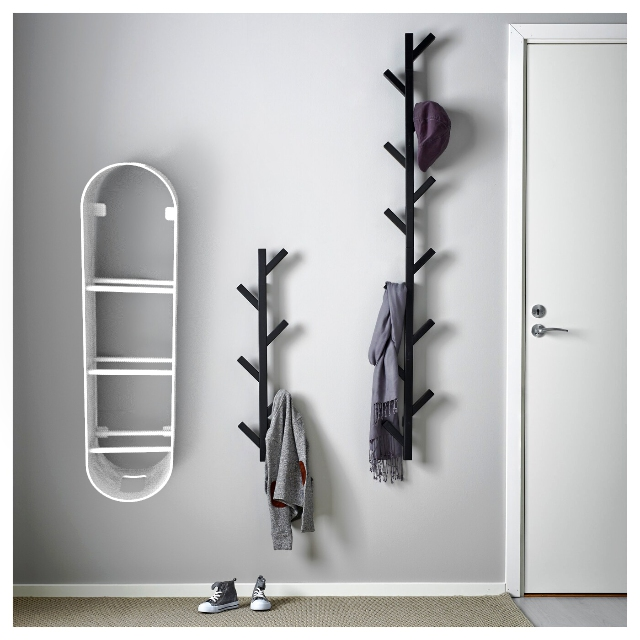
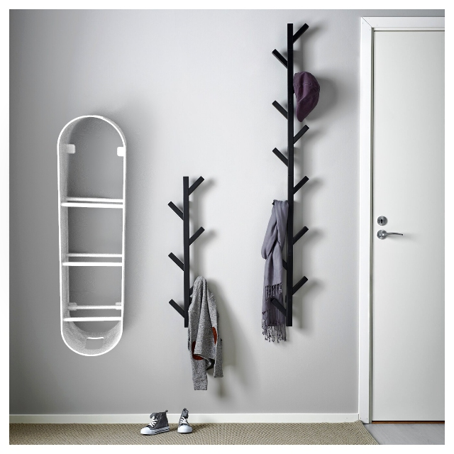
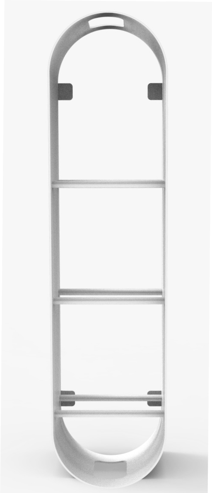
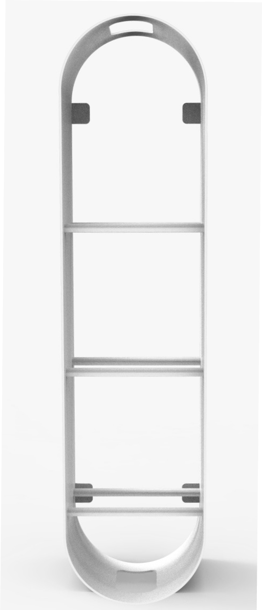

LOOP
Projeto em Design II - 2019
Produto & Gráfico
Desenvolvemos a peça de mobiliário LOOP, no âmbito de uma proposta
para a criação de um produto em chapa metálica partindo de uma
referência de peça de mobiliário tradicional, no qual era esperado
caracterizarmos um público alvo e um ambiente; aliada à criação de
uma imagem gráfica para o mesmo.
Assim, surgiu “LOOP”, uma peça de mobiliário com várias funções,
sendo que o utilizador pode combinar vários módulos para obter o
resultado pretendido.
Originalmente uma prateleira com suporte para guarda chuva que foi adaptada para servir essas necessidades e outras demais, como a função de prateleira, podendo ser montada pelo utilizador na horizontal, na vertical, pousada no chão ou pendurada por 4 parafusos. Completa com uma cesta por nós desenvolvida desenhada especificamente para guardar os sapatos de um casal contemporâneo com uma vida prática e quotidiano dinâmico.
 

 
